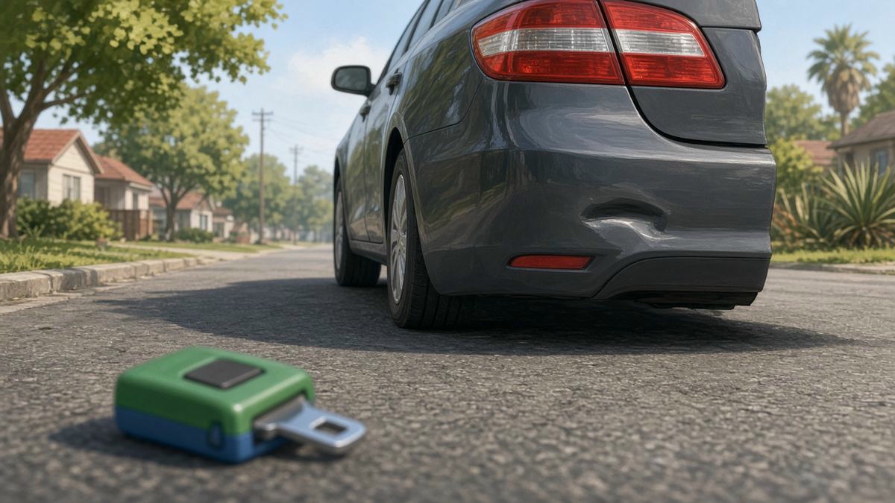

After any car accident, get emergency care first if you need it, then watch for neck pain, headaches, stiffness or tingling over the next few days. These symptoms often show up late. A prompt check with a doctor or chiropractor helps you understand what happened to your body and gives you a clear record if you need it later.
A crash on Williams Drive, near Sun City, or in a parking lot on a Saturday can leave you shaken even when everyone walks away. Adrenaline is very good at hiding pain in the first hours. Here is a plain-language guide to what to do next and what to watch for.
Right after the accident
- Check for injuries and call 911 if neededIf anyone has severe pain, trouble breathing, confusion, numbness or weakness, call 911 and do not move them unless they are in danger.
- Get to a safe spotIf the cars can be moved and no one is hurt, move out of traffic and turn on your hazard lights.
- Exchange information and document the sceneSwap names, phone numbers, insurance and plate details. Take photos of the vehicles, the road and any visible injuries.
- Report the crashCall the police, and notify your insurance company as soon as you reasonably can.
Why you might feel fine at first
In a collision, your head and neck can move quickly forward and back even at low speeds. That motion can strain the muscles, ligaments and joints of the neck and upper back. Because adrenaline and stress hormones dull pain, many people feel only a little sore on the day of the accident and much worse one to three days later.
A car with little visible damage does not always mean the people inside escaped strain. Bumpers are built to absorb some of the impact, but some of that force can still travel into the seats and the bodies sitting in them.
Symptoms to watch for in the days after
- Neck pain or stiffness, or trouble turning your head.
- Headaches, often starting at the base of the skull.
- Pain in the shoulders, upper back or low back.
- Tingling, numbness or weakness in the arms or hands.
- Dizziness, blurred vision, trouble concentrating, or feeling unusually tired.
- Jaw pain or ringing in the ears.
Why an early check matters
Getting checked within a few days does two useful things. First, it can find strain or joint restriction before your body starts guarding and compensating around it. Second, it creates a dated record of your symptoms, which your insurance company may ask about later.
At our West Georgetown office, a post-accident visit starts with your story: how the crash happened, where you were sitting, and what you have felt since. Then we examine how your neck and back move, check muscle tension, strength and nerve function, and decide whether imaging or a medical referral should come first. If chiropractic care is a good fit, your plan may include gentle adjustments, soft-tissue work, guided exercise and advice for sleeping, driving and working while you recover.
Insurance after a car accident in Texas
In Texas, auto insurers must offer personal injury protection (PIP) with a policy, and it is included unless the policyholder turned it down in writing. PIP can help with medical costs after a crash, no matter who caused it. Check your policy or call your insurer to see what you have. Our team offers free insurance verification and can help you understand what to ask.
Simple things that help while you recover
- Keep moving gently within comfort. Short walks and easy neck movement usually help more than staying still.
- Use a cold pack in the first day or two for sore areas, then heat if it feels better.
- Take breaks from screens and long drives, and set your headrest so it sits close to the back of your head.
- Write down your symptoms each day. It helps your care team and your claim.
We cannot promise how quickly any one person will recover, and every crash is different. What we can do is give you an honest exam, a clear plan, and straight answers.
Related: car accident injury care, whiplash and neck pain.